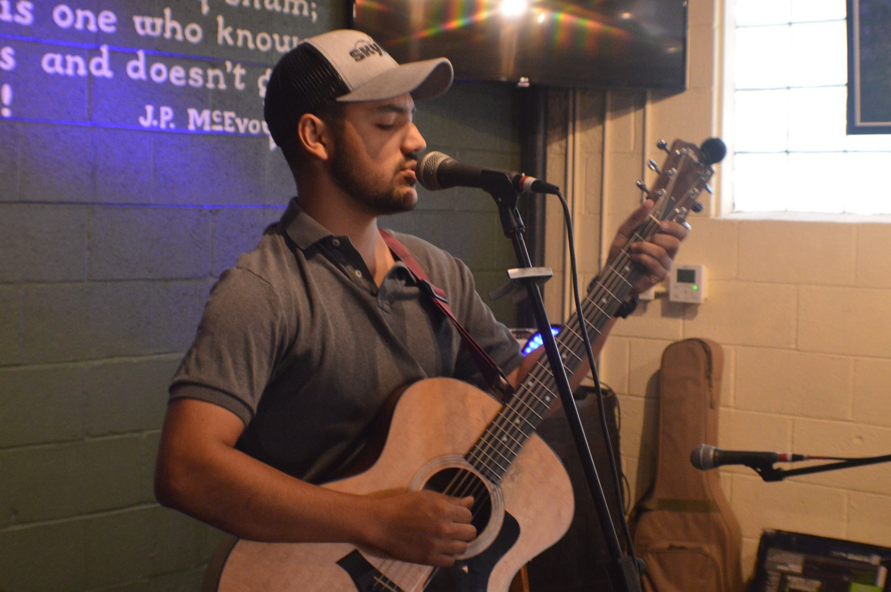

About Me
I am an inspired web development student looking to make a change in my career path. My background involves a broad variety of distinct occupations. From being a pre-dental and psychology student, to being a musician, to being a very hands-on automotive and bicycle enthusiast. My curious and intriguing self is always busy exploring fields of all kinds.
My goal after completing this course is to enter the field of web development as a Jr full-stack developer, explore the wide-ranging options and focus to find my preferred area of interest.
Once I have completed my Web Development Bootcamp through UNCC, I assure that I will be prepared to enter the field of web development with much inspiration.